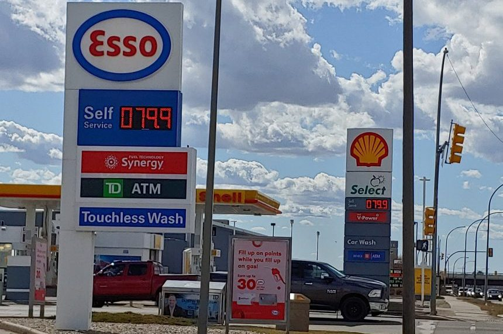
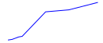
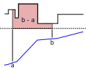

<!doctype html>
<html lang="en">
  <head>
    <meta charset="utf-8">

    <title>DeFi</title>

    <meta name="author" content="Doug Hoyte">

    <meta name="apple-mobile-web-app-capable" content="yes" />
    <meta name="apple-mobile-web-app-status-bar-style" content="black-translucent" />

    <meta name="viewport" content="width=device-width, initial-scale=1.0, maximum-scale=1.0, user-scalable=no, minimal-ui">

    <link rel="stylesheet" href="../reveal.js/css/reveal.css">
    <link rel="stylesheet" href="../reveal.js/css/theme/black.css" id="theme">

    <!-- Code syntax highlighting -->
    <link rel="stylesheet" href="../reveal.js/lib/css/zenburn.css">

    <!-- Printing and PDF exports -->
    <script>
      var link = document.createElement( 'link' );
      link.rel = 'stylesheet';
      link.type = 'text/css';
      link.href = window.location.search.match( /print-pdf/gi ) ? '../reveal.js/css/print/pdf.css' : '../reveal.js/css/print/paper.css';
      document.getElementsByTagName( 'head' )[0].appendChild( link );
    </script>

    <!--[if lt IE 9]>
    <script src="../reveal.js/lib/js/html5shiv.js"></script>
    <![endif]-->

    <style>
      .reveal .slides h1, .reveal .slides h2, .reveal .slides h3 {
        text-transform: none;
      }

      .two-column {
        display: flex;
        flex-wrap: wrap;
      }

      .two-column em {
        margin: 20px;
      }

      .reveal .big-and-bold {
        font-weight: bold;
        font-size: 135%;
      }

      .reveal .shrunk-a-bit {
        font-size: 90%;
      }

      .reveal .shrunk-a-bit pre {
        width: 100%;
      }

      .reveal pre {
        width: 100%;
      }

      .reveal .highlight {
        color: yellow;
        font-weight: bold;
      }

      .reveal .highlightRed {
        color: red;
        font-weight: bold;
      }

      .reveal .highlightGreen {
        color: green;
        font-weight: bold;
      }

      .left {
        left:-8.33%;
        text-align: left;
        float: left;
        width:50%;
        z-index:-10;
      }

      .right {
        left:31.25%;
        top: 75px;
        text-align: left;
        float: right;
        z-index:-10;
        width:50%;
      }

      table {
        font-size: 80%;
      }
    </style>
  </head>

  <body>
    <div class="reveal">
      <div class="slides">

<!------------------------------------------------------->


<section data-markdown><script type="text/template">

## DeFi

### Lesson 1: Prices, Oracles, and Uniswap

*Doug Hoyte, March 2021*

[https://is.gd/blockchaindefi](https://is.gd/blockchaindefi)

</script></section>


<section data-markdown><script type="text/template">

## Lesson Topics

* Prices and Oracles
* Averages and Accumulators
* Uniswap

</script></section>


<section data-markdown><script type="text/template">

## Decentralized Finance

* DeFi: Financial systems built with smart contracts as the platform for enforcing rules, instead of legal system
* The intersection of economics and blockchain technology
* Benefits are: transparent and permissionless

</script></section>


<section data-markdown><script type="text/template">

## Social benefit of markets

* Even if you aren't buying or selling, prices are valuable signals
* Trusted, publically visible pricing
  * This is a positive externality of markets
  * Helps people plan economic activity

</script></section>


<section data-markdown><script type="text/template">

## Fungible Assets

* Assets where every unit is interchangeable with any other
* You don't care which dollar bill you have, or exactly which share of a company

</script></section>


<section data-markdown><script type="text/template">

## Arbitrage

* Way to earn profit if you see the price of a fungible asset is different in two markets
* Simultaneously buy at the lower price and sell at the higher price
  * Difference is risk-free profit

</script></section>


<section data-markdown><script type="text/template">

## Arbitrage, 2

* The reason that prices around the world match
  * Example: Price of gold in New York and London
* No coordination required
  * Just assumes self-interested market participants

</script></section>


<section data-markdown><script type="text/template">

## Competition or collusion?



</script></section>


<section data-markdown><script type="text/template">

## Competition or collusion?

* So if you see similar prices, it must be a competitive market right?
* Not necessarily: They could be colluding together to keep the price high
  * Price fixing
  * Cartels

</script></section>


<section data-markdown><script type="text/template">

## Marginal Prices

* When you buy in bulk, it's cheaper right?
* Not so on financial markets:
  * There is usually a small amount available at a good price, and more at a worse price
* "Marginal price" is the price for the smallest (maybe infinitesimal) size you can buy

</script></section>


<section data-markdown><script type="text/template">

## Prices in Smart Contracts

* Smart contracts often need prices
  * To know a fair cost to charge for a service, or pay for an input
  * Derivatives: Betting whether a price will go up or down
  * Lending systems: Ensure that a loan is collateralized

</script></section>


<section data-markdown><script type="text/template">

## Oracles

* Smart contracts only have access to state already on the blockchain, or passed in via a transaction
* "Oracle" is the name for a method that a smart contract uses to get a price

</script></section>


<section data-markdown><script type="text/template">

## Off-chain oracles

* Prices are compiled from many sources off-chain, then submitted to the blockchain
* Usually some sort of trusted party signs the prices
* Example: Chainlink

</script></section>


<section data-markdown><script type="text/template">

## LIBOR

* London Inter-bank Offered Rate
* Banks submit their claimed lending costs, which are aggregated into the LIBOR by an association
* 2008 scandal: Banks were manipulating their submissions because they had derivative positions on the LIBOR

</script></section>


<section data-markdown><script type="text/template">

## On-chain Price Feeds

* Rather than taking prices from off-chain markets, can we use the prices from on-chain trading?
* These can provide "objective" prices
  * Driven by arbitrage, not oracles

</script></section>


<section data-markdown><script type="text/template">

## Flash Loans

* Imagine you write a cheque to buy something, then you sell it for a profit and receive a new cheque
* As long as you deposit your new cheque before the cheque you wrote clears, you don't need any balance in your account!

</script></section>


<section data-markdown><script type="text/template">

## Flash Loans on Ethereum

* On Ethereum, it works like this:
  * A borrower requests a lending contract to send some ETH or tokens
  * The lender sends the tokens, then invokes a callback into the borrower's code
  * When the borrower's callback returns, the lender verifies that the funds were returned (plus fees)

</script></section>


<section data-markdown><script type="text/template">

## Example Flash Lender

    function flashLoan(uint amount) {
        uint origBalance = this.balance;

        msg.sender.transfer(amount);

        // Invoke a function on the caller
        IFlashLoan(msg.sender).onFlashLoan();

        // Make sure the function paid us back
        require(this.balance >= origBalance);
    }

</script></section>


<section data-markdown><script type="text/template">

## Snapshot Problem

* On-chain prices must be used with care
  * They can often be manipulated
* Attackers can make a big trade to move the price, then call your contract which reads the bad price, then make a trade to move the price back
  * *All within the same transaction*
    * Risk-free
  * Flash loans make this worse: Attackers don't even need capital to do this

</script></section>


<section data-markdown><script type="text/template">

## 15 minute break

</script></section>


<section data-markdown><script type="text/template">

## Solution to the snapshot problem

* One solution to the snapshot problem is to not use instantaneous prices
* Instead use the price averaged over some time period
  * Attacker would have to hold the price at a bad level for period of time
  * But attacker is vulnerable to arbitrage while doing this

</script></section>


<section data-markdown><script type="text/template">

## Impulse

Imagine an asset's price is flat, and then spikes up momentarily, and then spikes back down:


* This is called an "impulse"

</script></section>


<section data-markdown><script type="text/template">

## Moving Average

* If we transform this price data and make every point the average of the previous N points:
 


* This is the "impulse response"

</script></section>


<section data-markdown><script type="text/template">

## Impulse Response 


* Suppose N=10
  * Response is 1/10th the height of the impulse
  * After the N points pass, the price level returns to what it was before
    * "Finite Impulse Response"

</script></section>


<section data-markdown><script type="text/template">

## Step

Now imagine the price jumps to a new level and stays there:


* This is called a "step"

</script></section>


<section data-markdown><script type="text/template">

## Step Response

This is how our moving average responds to a step: 


* Step response is the integral of the impulse response

</script></section>


<section data-markdown><script type="text/template">

## Features of Moving Averages

* Abrupt changes to the price take some time to be reflected in the average
* After the window elapses, historical prices have no effect on the new prices (FIR)
* Very efficient to compute
  * Recursively

</script></section>


<section data-markdown><script type="text/template">

## Recursive computation

Imagine we want to keep an average of the last 10 elements. Keep a running sum:


* Adding new element just needs 1 subtraction and 1 addition

</script></section>


<section data-markdown><script type="text/template">

## Uniswap2 TWAP

* Uniswap 2 works by keeping a running sum of the price
* Every second the current price is added to the sum
  * This sum is known as an "accumulator"
  * Doesn't actually run every second, just simulated when contract is interacted with

</script></section>


<section data-markdown><script type="text/template">

## Recursive computation of TWAP

If you have 2 accumulator snapshots, subtract them to get the sum of prices between:


* Then divide by the time between snapshots to get average price

</script></section>


<section data-markdown><script type="text/template">

## TWAP Example

Suppose we have the following price movements:


</script></section>


<section data-markdown><script type="text/template">

## TWAP Example, 2

This is what the accumulator looks like:



* The higher the price, the steeper the slope of the accumulator

</script></section>


<section data-markdown><script type="text/template">

## TWAP Example, 3

Subtract 2 snapshots to get area:



</script></section>


<section data-markdown><script type="text/template">

## Geometric Averages

* Another type of moving average uses the product of the prices, and then the nth root
* Advantage: Averages of inverses = inverse of average
  * Uniswap 2 uses normal moving average so has to keep two separate moving averages
  * Uniswap 3 uses geometric so only needs to keep one
* Also matches log-normal price models, which some people use to model trading activity

</script></section>


<section data-markdown><script type="text/template">

## 15 minute break

</script></section>


<section data-markdown><script type="text/template">

## Automated Market Makers

* An AMM is a special contract that buys and sells an asset according to specific rules
* Uniswap is most famous example on Ethereum

</script></section>


<section data-markdown><script type="text/template">

## Constant Product Rule

* Uniswap has a simple rule: The product of the amounts of the assets is a constant
      x * y = k
* You can swap an amount of token for another amount, but you need to keep the product the same

</script></section>


<section data-markdown><script type="text/template">

## Constant Product Rule, 2

* Suppose there are 10 of token A and 4 of token B
      k = 10 * 4 = 40
* The price of A in units of B is
      4 / 10 = 0.4
* The price of B in units of A is
      10 / 4 = 2.5

</script></section>


<section data-markdown><script type="text/template">

## Constant Product Rule, 3

* I want to buy exactly 2 units of A so I withdraw 2 A tokens from reserves, leaving 8 A tokens
* How many Bs must there now be?
      8 * B = 40
      B = 40 / 8
      B = 5
* Since B started at 4 tokens I need to deposit 1 unit of B to bring it up to 5

</script></section>


<section data-markdown><script type="text/template">

## Constant Product Rule, 4

* Now there are 8 of token A and 5 of token B
* `k` remains 40 <span style="margin-left: 20px; color: green; font-size: 120%">&check;</span>:
      k = 8 * 5 = 40
* The price of A in units of B goes up:
      5 / 8 = 0.625
* The price of B in units of A goes down:
      8 / 5 = 1.6

</script></section>


<section data-markdown><script type="text/template">

## Slippage

* We said the price of A in B was 0.4
* But we paid 1 B for 2 As, meaning price was 0.5
  * 0.4 was the *marginal* price (price for smallest amount possible)
  * The more you buy the worse your average price will be
    * "*slippage*"

</script></section>


<section data-markdown><script type="text/template">

## Decimal Scaling

* In solidity, division is always integer division (truncates decimals)
* Example: `4 ether / 10 ether = 0` (!)
* To get around this, first scale by decimal precision (usually `1e18`):

      function getPriceOfA() external view returns (uint) {
          return reserveB * 1e18 / reserveA;
      }

</script></section>


<section data-markdown><script type="text/template">

## Lab 1: My Uniswap

[myuniswap.html](myuniswap.html)

</script></section>


<!------------------------------------------------------->


      </div>

    </div>

    <script src="../reveal.js/lib/js/head.min.js"></script>
    <script src="../reveal.js/js/reveal.js"></script>

    <script>

      // Full list of configuration options available at:
      // https://github.com/hakimel/reveal.js#configuration
      Reveal.initialize({
        controls: true,
        progress: true,
        history: true,
        center: true,

        transition: 'none', // none/fade/slide/convex/concave/zoom

	math: {
          mathjax: '../lib/MathJax/MathJax.js',
          config: 'TeX-AMS_SVG-full',
	},

        // Optional reveal.js plugins
        dependencies: [
          { src: '../reveal.js/plugin/markdown/marked.js', condition: function() { return !!document.querySelector( '[data-markdown]' ); } },
          { src: '../reveal.js/plugin/markdown/markdown.js', condition: function() { return !!document.querySelector( '[data-markdown]' ); } },
          { src: '../reveal.js/plugin/highlight/highlight.js', async: true, callback: function() { hljs.initHighlightingOnLoad(); } },
          { src: '../reveal.js/plugin/math/math.js', async: true },
        ]
      });

    </script>

  </body>
</html>
